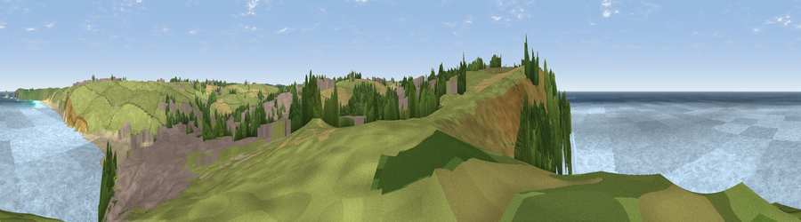

Viewpoint near Perranporth
#13798 in England · top 32% of its area beats it · near Perranporth · open accessWhere it is
The exact computed spot (SW 75175 54275). Click the marker for map links.
Public access: this spot lies on mapped open-access land (CRoW Act 2000) — you may roam here on foot. Computed from Natural England's CRoW access layer and OpenStreetMap rights of way — not the legal definitive map. Always verify locally.
The view, rendered

A 360° render of this exact spot computed from the terrain model, tree cover and land cover — summer colours, afternoon light, calibrated against photographs of famous viewpoints. Real trees, hedges and buildings will differ in detail.
The panorama
Grey silhouette: terrain skyline in each direction (720 bearings, Earth curvature and refraction included). Dashed green: skyline with trees (+15 m) and buildings (+8 m) as obstacles. Blue strip: how far the ground is visible on each bearing.
Where the view opens
Wedge length = distance to the farthest visible ground on that bearing (vegetation-aware). Rings at 10, 25 and 50 km.
What fills the view
69% water · 18% grassland · 5% built-up · 5% woodland · 2% cropland · 1% bare ground
Angular shares of the visible panorama (visual magnitude), not map area. Landscape diversity 0.44 (0–1 Shannon).
Key numbers
More beautiful places nearby
The staircase of upgrades: each row has a higher view potential than everything closer. Driving times are estimates from straight-line distance, calibrated against real road routing — check an actual route before setting out.
| Place | Direction | Drive | Score |
|---|---|---|---|
| Viewpoint near Perrancoombe | WSW · 1 km | ~4 min | 71.3 |
| Viewpoint near St. Agnes | SW · 5 km | ~11 min | 72.3 |
| Viewpoint near St. Agnes | SW · 6 km | ~12 min | 86.0 |
| St Agnes Beacon | SW · 6 km | ~12 min | 86.1 |
| Viewpoint near Foxhole | E · 22 km | ~37 min | 86.4 |
| Viewpoint near Stenalees | E · 25 km | ~41 min | 88.0 |
| Viewpoint near Crackington Haven | NE · 55 km | ~77 min | 88.1 |
| Viewpoint near Combe Martin | NE · 126 km | ~150 min | 88.9 |
50.34537, -5.16132 · source: screening · position refined by local search. Computed location — check access rights before visiting.